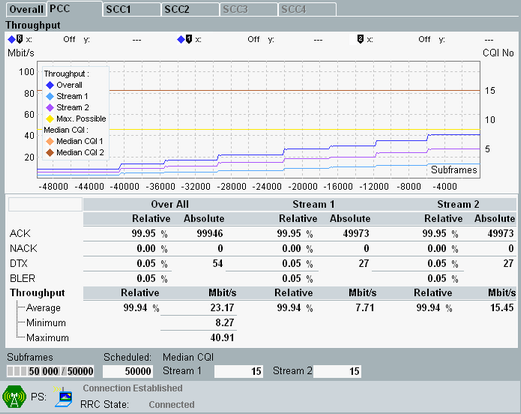

The "Throughput" view provides a graphical presentation of downlink throughput and median CQI results for the previous measurement cycle. The X-axis indicates the processed subframes, with the last processed subframe labeled 0, the previously processed subframe labeled -1, and so on. The diagram displays one result value per 200 processed subframes.
The BLER, throughput and median CQI results below the diagram are related to the entire measurement duration. They are also provided in the "BLER" or "CQI Reporting" views. For details, refer to the descriptions of these views.

For carrier aggregation scenarios, the "Throughput" view presents the results on several tabs. The "PCC" and "SCC<n>" tabs provide the results for the PCC downlink and for the SCC downlinks. The results for the sum of all PCC plus SCC downlink streams are provided on the "Overall" tab.